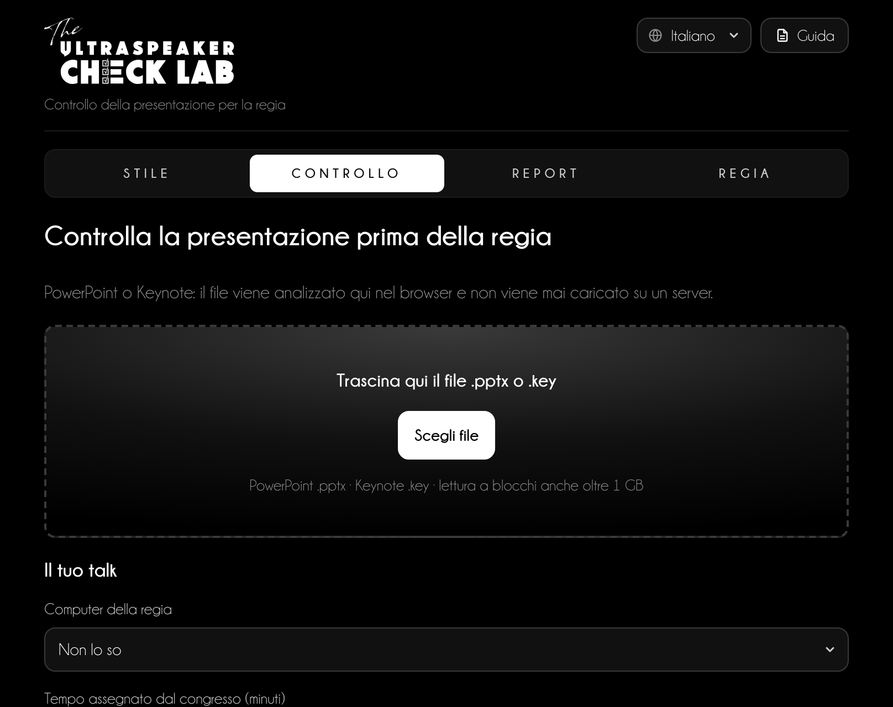
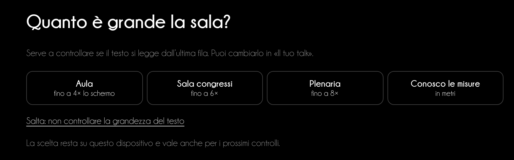
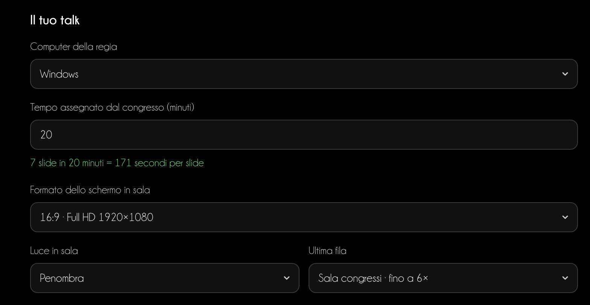
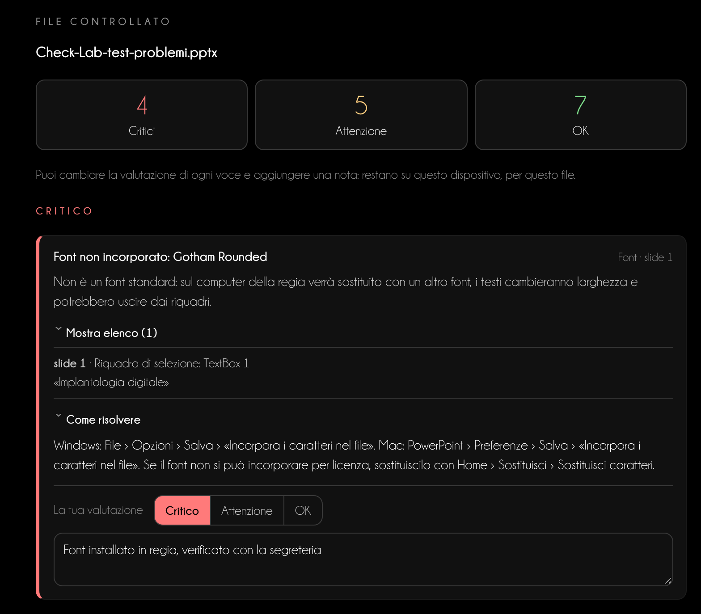
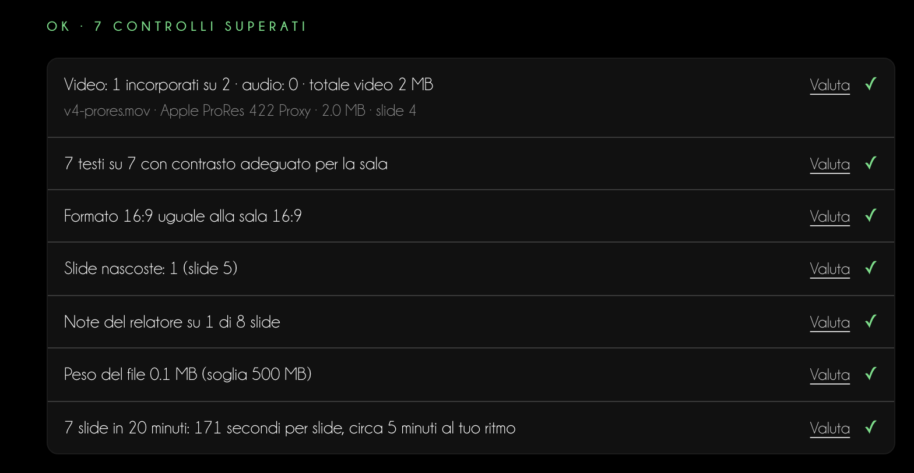
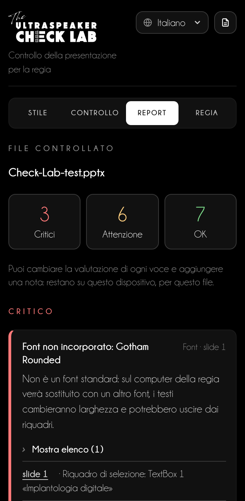
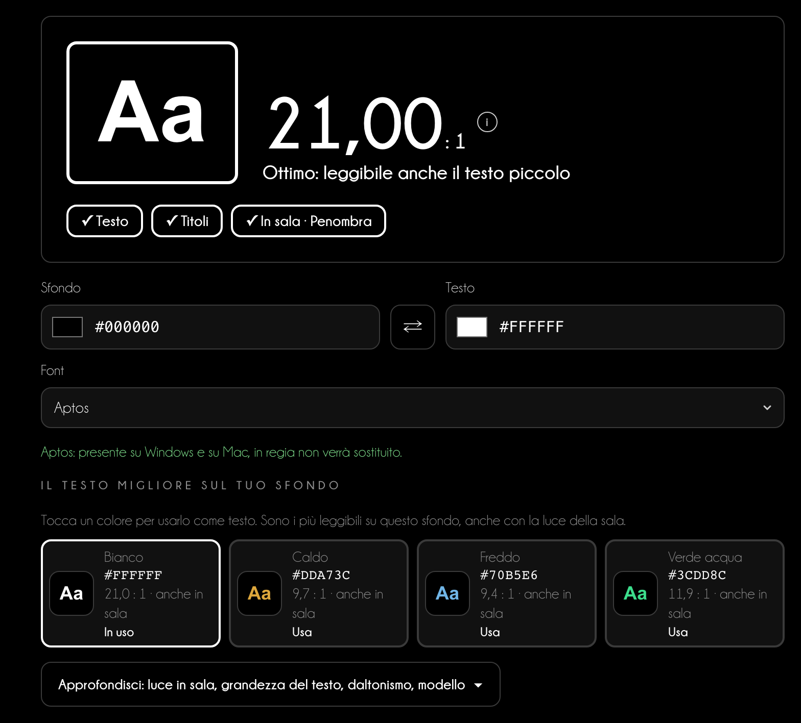
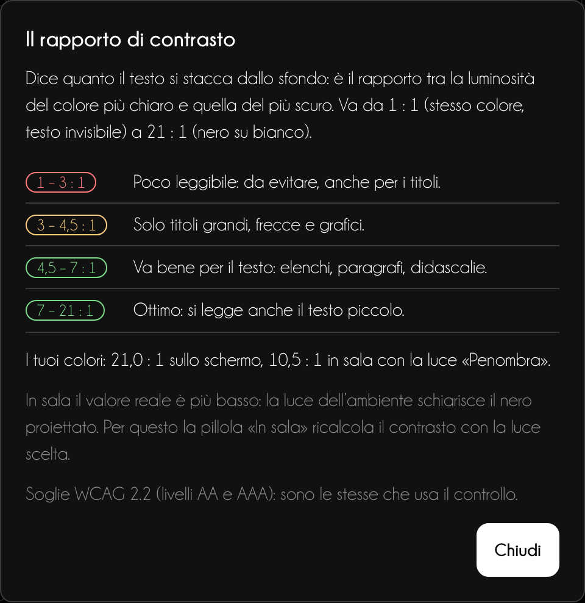
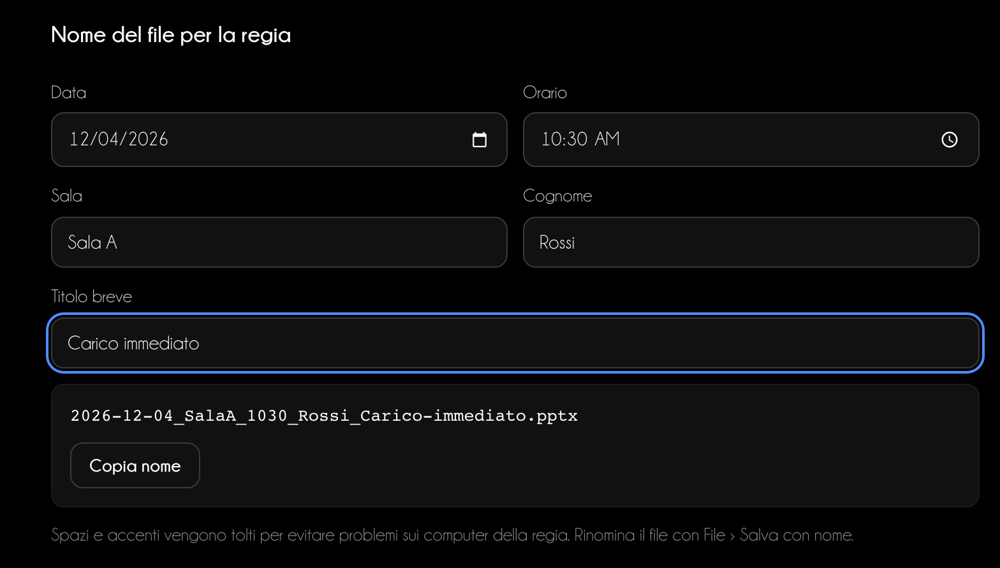
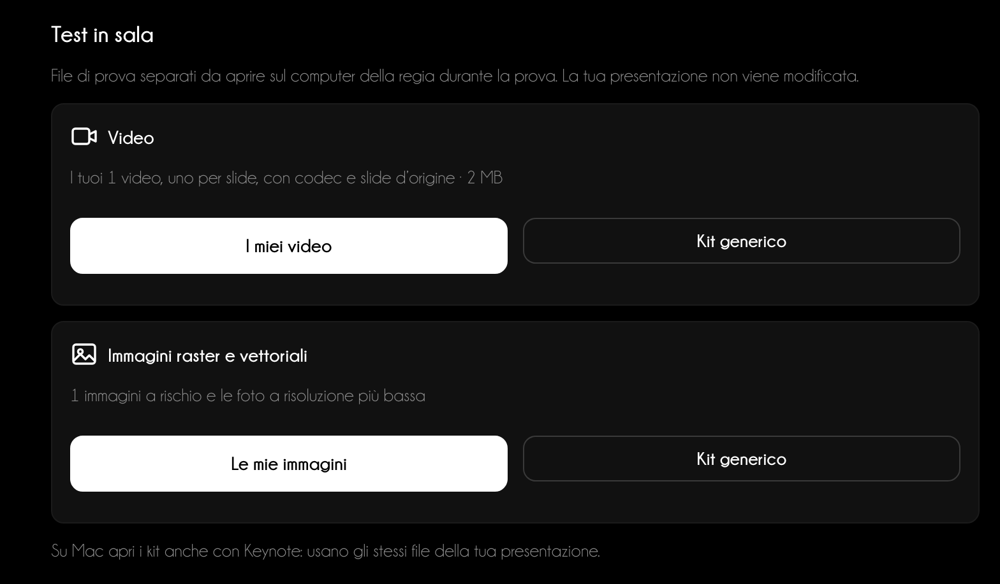

Guida d'utilizzo
La presentazione pronta
per la regia
Controlla font, video, immagini, leggibilità, formato e tempi di una presentazione PowerPoint o Keynote, prima di consegnarla al congresso.
Guida d'utilizzo
Controlla font, video, immagini, leggibilità, formato e tempi di una presentazione PowerPoint o Keynote, prima di consegnarla al congresso.
Indice
Il Check Lab legge la tua presentazione e ti dice cosa può non funzionare sul computer della regia: un font che manca, un video che non parte, un testo che dall'ultima fila non si legge.
Nel browser
niki977.github.io/ultraspeaker-check-lab. Trascina un file .pptx (PowerPoint) o .key (Keynote). Funziona su computer, tablet e telefono.
In PowerPoint
Scheda Home → gruppo The Ultraspeaker → Check Lab. Il pannello controlla la presentazione aperta e porta alla slide del problema con «Vai alla slide».
In arrivo
Il pannello per PowerPoint è in fase di prova e sarà disponibile a breve. Nel frattempo usa la versione web: fa gli stessi controlli.
| Cosa controlla | Esempi |
|---|---|
| Font | non incorporati, solo Windows o solo Mac |
| Video e audio | collegati invece che incorporati, formati che non partono, 4K |
| Immagini | bassa risoluzione, file pesanti, EPS, CMYK, HEIC |
| Leggibilità | contrasto con lo sfondo e sulle foto, grandezza per l'ultima fila, grafici per chi distingue male rosso e verde |
| Formato e file | formato dello schermo, slide vuote o nascoste, link, peso del file |
| Tempi | secondi per slide rispetto al tempo assegnato |
Privacy
Il file viene letto solo sul tuo computer e non viene mai caricato su un server. Sul dispositivo restano la lingua, le impostazioni del talk, la checklist e le tue valutazioni del report.
Quattro schede in alto. Si parte da Controllo; Stile serve prima di creare le slide, Regia il giorno del talk.

1234Bastano un minuto e il file della presentazione. Più dati dai sul talk, più il report è preciso.


Ultima fila
Aula, sala congressi o plenaria: la grandezza minima del testo dipende dalla distanza dell'ultima fila. Se conosci le misure, scegli «Conosco le misure» e inserisci altezza dell'immagine e distanza in metri.
Il report non dà un voto: un relatore spesso deve scendere a compromessi, e sei tu a decidere quanto pesa ogni problema.

123456Le tue valutazioni restano su questo dispositivo, legate al file: se correggi la presentazione e la ricontrolli, le ritrovi. Azzera le mie valutazioni le cancella. Con Esporta PDF o Copia report porti il report alla segreteria o al tuo assistente.


Nel pannello di PowerPoint ogni slide del report è cliccabile e porta direttamente al punto da correggere.
Gli avvisi più frequenti e la correzione più rapida. Il consiglio completo è sempre in «Come risolvere».
| Avviso | Cosa fare |
|---|---|
| Font non incorporato | PowerPoint: File › Opzioni › Salva › «Incorpora i caratteri nel file». Se la licenza non lo permette, sostituisci il font. |
| Video collegato o online | Inseriscilo dal computer (Inserisci › Video › Questo dispositivo): il file deve stare dentro la presentazione. |
| Video in formato .mov, ProRes, WMV | Convertilo in MP4 H.264, per esempio con HandBrake, e reinseriscilo. |
| Immagini a bassa risoluzione | Sostituiscile con l'originale, almeno della larghezza in pixel indicata. |
| Testo poco leggibile | Usa il colore proposto; nel pannello premi «Applica». |
| Testo su foto | Metti una banda semitrasparente dietro il testo o sposta il testo su una zona uniforme. |
| Testo troppo piccolo | Ingrandiscilo o dividi il contenuto su due slide. |
| File pesante | Formato immagine › Comprimi immagini, 220 ppi, elimina le aree ritagliate. |
Prima di creare le slide, scegli sfondo, colore del testo e font: vedi subito se si leggeranno in sala.

12345
| Rapporto | Uso |
|---|---|
| sotto 3 : 1 | poco leggibile, da evitare |
| da 3 : 1 | solo titoli grandi, frecce, grafici |
| da 4,5 : 1 | testo normale, elenchi, didascalie |
| da 7 : 1 | ottimo, anche il testo piccolo |
Font scaricati
Prima di usare un font da Dafont o da un altro sito controlla la licenza: molti sono «solo per uso personale». Per incorporarlo in PowerPoint la licenza deve permetterlo.
La scheda Regia prepara la consegna: il nome del file, la checklist del giorno e i file di prova da aprire in sala.


Kit immagini
Sulla slide SVG il titolo dell'immagine deve dire «SVG». Se leggi «PNG», quel computer non mostra il vettoriale e usa l'anteprima di riserva.
Il Check Lab trova i problemi del file. Questi tre accorgimenti evitano quelli della sala.
Consegna il giorno prima
Manda il file alla segreteria almeno 24 ore prima, con il nome nel formato della regia, e porta una chiavetta con la presentazione e un PDF di riserva.
Prova in sala 30 minuti prima
Apri il kit «Test in sala» sul computer della regia: in due minuti sai se video, audio e immagini funzionano.
Scrivi per l'ultima fila
In una sala congressi con schermo 16:9 servono circa 32 pt in PowerPoint. Se un testo non ci sta, dividilo su due slide invece di rimpicciolirlo.
Assistenza
Scrivi a info@theultraspeaker.com indicando computer, versione di PowerPoint o browser e cosa compare sullo schermo. Non serve inviare la presentazione.

Knowledge is not enough.
From expert to Ultraspeaker.
theultraspeaker.com · info@theultraspeaker.com